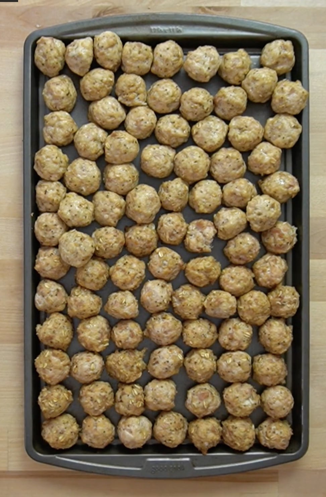

Chicken meatballs
Description
Chicken meatballs made from ground chicken, seasonings, and oats instead of breadcrumbs. These meatballs are the perfect addition to Snack City in your freezer. They can be eaten plain, sauced, or used to add in meals. They have been my favorite resident of Snack City lately.
Ingredients
- 5 lbs (2270 g) ground chicken i used 96% lean. You can make this in a food processor if needed
- 1 cup (80 g) rolled oats
- 2 (100 g) eggs beaten
- 1 tbsp (12 g) garlic powder
- 1 tbsp (12 g) onion powder
- 1½ tsp (10 g) salt
- 2 tsp (8 g) pepper
- oil spray
Steps
- Preheat your oven to 400°F.
- If you need grind your chicken, do so. I make ground chicken by placing boneless skinless chicken thighs into the food processor until it resembles ground meat. I do a bunch at once and freeze the excess.
- In a large bowl, add your ground chicken, rolled oats, eggs, onion powder, garlic powder, salt, and pepper. Mix it together until everything is fully incorporated.
- Line a few large baking sheets with foil in preparation for the meatballs. It may help to spray lightly with oil.
- Using a cookie scoop, create meatballs and spread out on to your sheet pans. Space them out evenly with some room between each so that they will brown more easily.
- Once you have all of the meatballs created, form them into a tighter ball by tossing each meatball between your hands a few times. It will help to spray your hands with a bit of oil to keep the chicken from sticking.
- Roast your meatballs in the oven for 17-20 minutes.
- Doing one sheet pan at a time will lead to better browning. If you try to place a pan onto each rack, the one on the top rack will struggle to get brown due to the steam being released from the bottom pan. They will still taste awesome and I do two at once for speed but just be aware that you will sacrifice some browning. When the meatballs are finished, remove from the oven and allow to cool.
- Once all of your meatballs have been cooled, transfer them to one single sheet pan and move to your freezer to flash freeze. This just means that you freeze them, uncovered in a single layer, so that they have a chance to freeze individually.
- Once they have frozen solid, transfer them over into a ziplock bag, remove all of the air and move them into Snack City in your freezer.
- I made 83 meatballs out of this recipe. The nutrition information you see here is for 83 meatballs. If you end up having more or less than that, your nutrition information will be slightly different. Use the table below this recipe to enter how many meatballs you made for the better nutritional estimate.